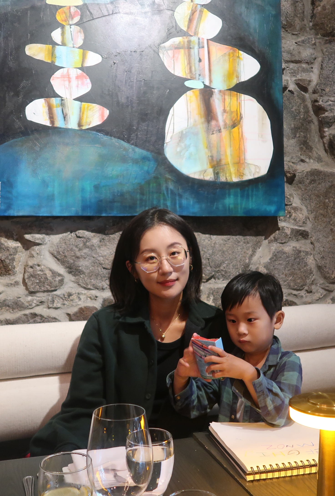

About me
My name is Jiayan Wu, and I go by Tiffany at school. Nice to meet you. I was born and raised in Shanghai, China. I came to Ottawa on 19th, 2015. I chose to be a homemaker when I found out I was pregnant 5 years ago. Our life has been traditional, simple, and maybe borning to some. But we all try to find little joy every day.
My childhood was simple but meaningful. My mon is a devoted Buddhist and so do I. I still remember the days that my mom and I went to Vihara to pray on Saturday mornings, and enjoyed the delicious vegan food in the resturant. We embrance the concepts of KAR in my family.
“Do not dwell in the past, do not dream of the future, concentrate the mind on the present moment.” -Buddha
My Hobby List
- Travelling
- Photography
- Listening to music